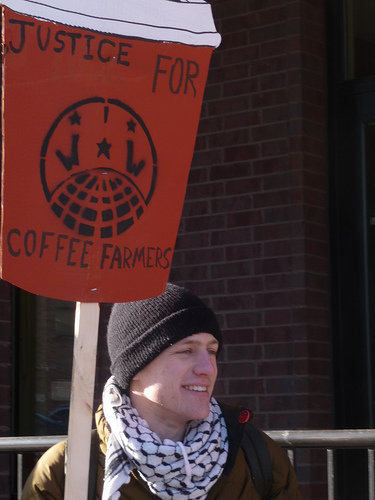

Submitted on Sat, 01/17/2009 - 6:30pm

Union and Ecology Center Sign Contract The "non-profit" Ecology Center, under contract with the City of Berkeley, runs the Curbside recycling pickup program in that city. We, the IWW, are the representatives of these workers. The economic (wages and benefits) portion of this contract expired on Jan. 1 and we have been in negotiations for the last several months (up until today operating on a contract extension).
Basically, the position of the Ecology Center (EC) is that because
the City of Berkeley is having a budget crisis (as are almost all other cities), that they could not afford a decent raise and, in fact, had to reduce the level of health benefits. They also made the claim that since they are a non-profit that we should regard them differently. Neither the workers nor the Union was buying this. This is especially so because they refused to give us the figures for how much it costs to run Curbside and, therefore, how much of the contract with the
city they are creaming off of the top to finance other EC operations and salaries.
Their offer ended up as being a 3% wage increase plus a payment of $2,000 per year into each worker's 401(k) plan. In addition, family members of the workers would be covered by the health plan before
they have been up until now. This was an improvement over their original offer which did not include the $2,000 payment but did include a demand for a significantly worse health care package.
Submitted on Fri, 01/16/2009 - 3:33pm
 As many of you know the IWW has been organizing Truck Drivers in Eastern North
Carolina and Virginia for much of the past year. In response to our growing
power and planned founding convention this upcoming weekend, the bosses have
begun firing the union's leadership. Two log drivers and five container haulers
have lost their job over the past two days.
As many of you know the IWW has been organizing Truck Drivers in Eastern North
Carolina and Virginia for much of the past year. In response to our growing
power and planned founding convention this upcoming weekend, the bosses have
begun firing the union's leadership. Two log drivers and five container haulers
have lost their job over the past two days.
The union is already
discussing legal and direct action means to fight these unjust firing, but right
now we need funds to support our fired drivers.
These drivers have families
to support and this is a part of the country where economic opportunities are
very limited. Please offer whatever you can, drivers are counting on
you.
Checks can be sent to the Freight Truckers Organizing Committee
at
PO Box 274, Waukegan, IL 60079. Please include "emergency relief" in the
memo line.
We are in the process of setting a PayPal Acct for online
donations. You will be informed as soon as it is ready.
Thank you and
please be generous.
Past Press Releases from the Freight Truckers
Organizing Committee:
NC Truckers Form Union, Hold Work
Stoppage - United Truckers Cooperative to Picket Outside of Weyerhaeuser
Mills
http://www.iww.org/en/node/4486
NC Truckers to Formalize
Union Over MLK Weekend - Negotiating Committee Already Formed in Preparation for
Talks
Submitted on Fri, 01/16/2009 - 2:42pm
 Saturday 10 January 2009
Saturday 10 January 2009
The International Solidarity Commission (ISC) of the Industrial Workers of
the World (IWW) condemns in the strongest possible terms the military attack by
the Israeli state and IDF on the 1.5 million Palestinian people living in the
Gaza strip. This attack has included sustained indiscriminate aerial bombing of
urban population centers, schools, mosques, hospitals and other civilian
infrastructure. Hundreds of civilians have been killed and injured, and homes
have been destroyed. This attack is a form of collective punishment by the
Israeli state against the people in Gaza. This attack on the people in Gaza is
barbaric and represents an attack on the working class in all countries.
The ISC condemns the 18-month siege against the population in Gaza which
has prevented food, electricity, medical supplies, and other basic necessities
from reaching the people of Gaza and crippling the economy. This form of
collective punishment against the people of Gaza is barbaric and represents an
attack on the working class in all countries.
The ISC condemns rocket
attacks fired into southern Israel by various factions in Gaza. These attacks
have killed and injured Israeli civilians. This form of collective punishment
against the people of southern Israel represents an attack on the working class
in all countries.
The ISC recognizes the urgency and massive scale of
the current attacks and mass murder against the people of Gaza by the Israeli
state.
It is estimated that 850 Palestinians in Gaza and 13 Israelis have
died so far.
The IWW is a revolutionary international industrial union
that works to build unity of workers and working class people across all
borders, occupations, industries, religions, races and nationalities. The IWW
stands, and has always stood against all wars. Wars are caused by capitalist
governments, and anti-working class leaders and movements, for the economic and
political benefit of the ruling elites. We the working class are made to fight
each other against our own interests.
Submitted on Wed, 01/14/2009 - 9:37pm
 Media Statement delivered January 7: Faced with the prospect of losing
another trial in front of the National Labor Relations Board the
Regional Director has agreed to let Starbucks settle the charges
against them and forego the trial that was to begin today. The union is
upset that the Board is agreeing to accept another Starbucks settlement
in Grand Rapids instead of holding them accountable in open court. If
this most recent settlement is approved it will be 3rd one allowed by
the board in Grand Rapids. With the signing of each settlement
Starbucks has said they would end their anti-union intimidation and
each time it has continued unabated. We can be sure it will continue
which is why union membership is so vital.
Media Statement delivered January 7: Faced with the prospect of losing
another trial in front of the National Labor Relations Board the
Regional Director has agreed to let Starbucks settle the charges
against them and forego the trial that was to begin today. The union is
upset that the Board is agreeing to accept another Starbucks settlement
in Grand Rapids instead of holding them accountable in open court. If
this most recent settlement is approved it will be 3rd one allowed by
the board in Grand Rapids. With the signing of each settlement
Starbucks has said they would end their anti-union intimidation and
each time it has continued unabated. We can be sure it will continue
which is why union membership is so vital.
Had the trial gone on here today in Grand Rapids we would have detailed
the same type of union busting activity that Starbucks was found guilty
of a couple weeks ago in New York. Internal communications would have
been admitted into evidence showing upper management discussions about
union organizing in Grand Rapids and speculation about barista's union
sympathies. The same type of surveillance and monitoring that was going
on in New York. Also, Starbucks selectively enforced the attendance
policy, scheduled baristas based on their union sympathies, and gave me
less in raises because of my union affiliation. Based on the evidence
that would have been presented its unbelievable that Howard Schultz
doesn't have knowledge of the huge anti-union operation in place at
Starbucks. Its possible hes directing the whole operation.
On July 5th of last year there was a Global Day of Action against
Starbucks called by the Grand Rapids Starbucks Workers Union and the
Seville (Spain) CNT. The Day of Action was called after Monica was
fired from a Starbucks in Seville and I was fired here in Grand Rapids.
Over 200 Starbucks were picketed in over 80 cities in 20 countries. We
have a message from the CNT with an update of Monica's situation.
Submitted on Wed, 01/14/2009 - 9:32pm
Disclaimer - The opinions of the author do not necessarily match those of the IWW. This article is reposted in accordance to Fair Use guidelines.
By Paul Demko - The Minnesota Indepedent, January 9, 2009
About a dozen former and current Starbucks workers gathered outside
the coffee chain’s outlet at the intersection of Nicollet and Franklin
avenues on Thursday morning, circling on the sidewalk in the
single-digit temperatures and carrying placards that read “Justice for
Baristas” and “Starbucks Workers Union.”
“Starbucks Union here to stay,” they chanted. “These lattes are union-made.”
The event coincided with the filing of 11 labor violation charges
against the company with the National Labor Relations Board (NLRB).
Among the accusations against the ubiquitous coffee retailer: Employees
were illegally fired or punished for engaging in union activities;
store managers wrongly prohibited discussions of organizing efforts at
work; and pro-union workers were spied on by management.
“Starbucks has flagrantly violated the National Labor Relations Act
on countless occasions,” said Aaron Kocher, an employee at the Nicollet
Avenue shop.